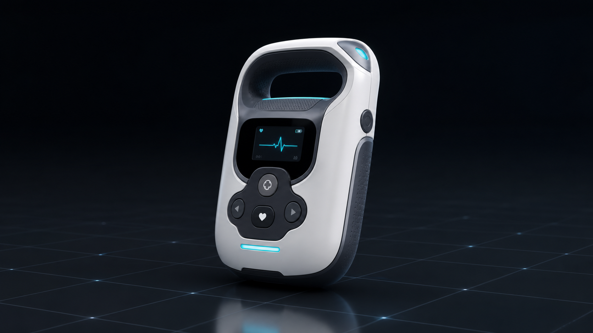
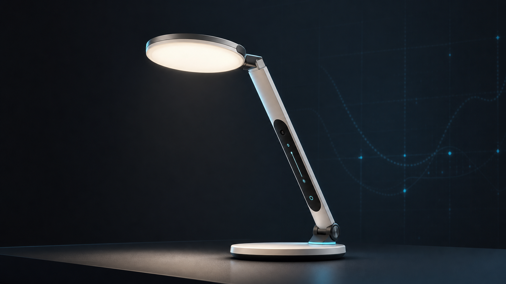
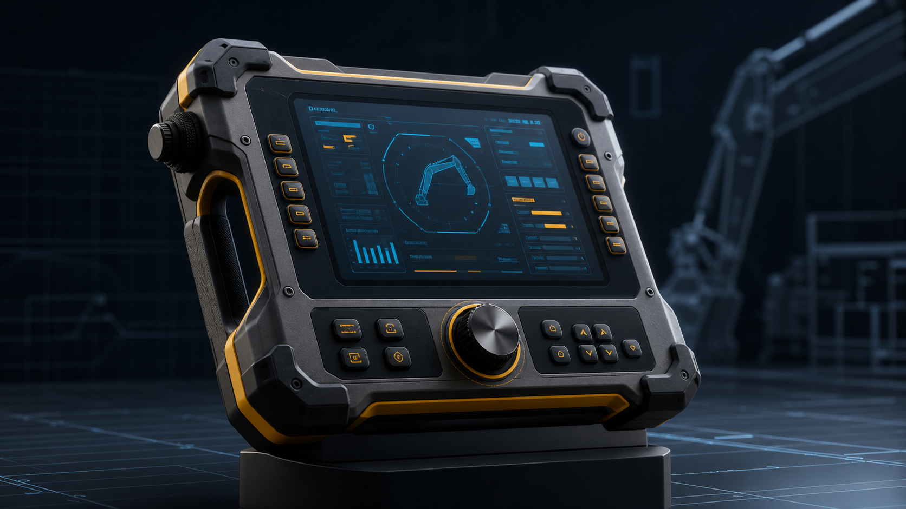
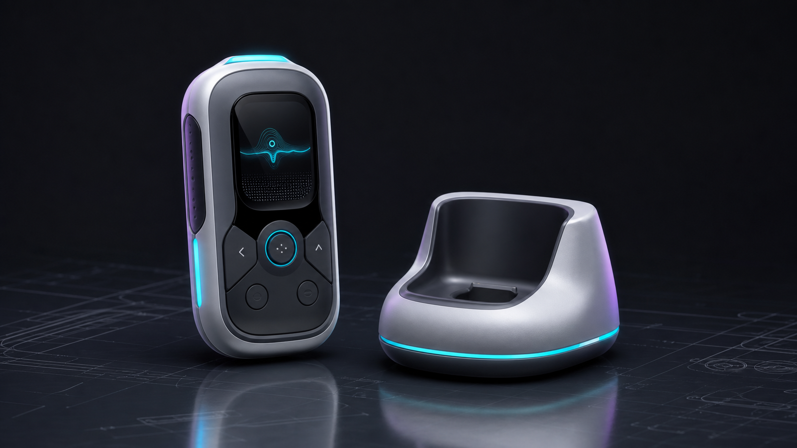
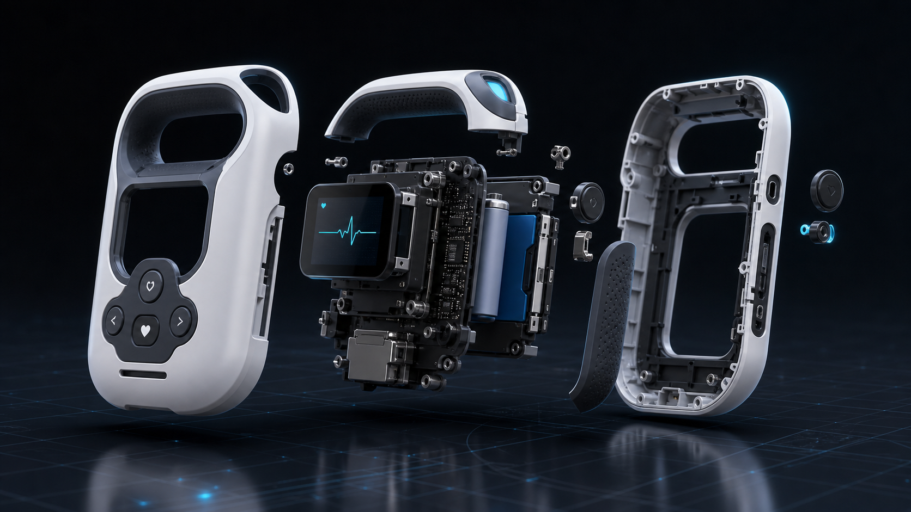
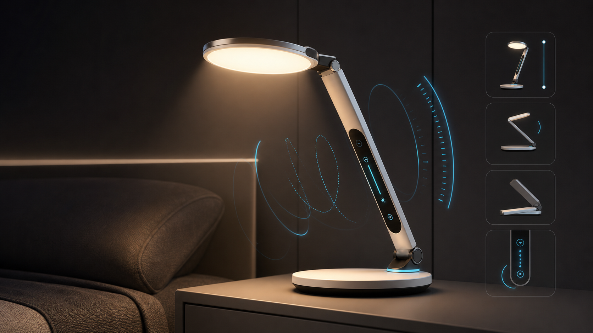
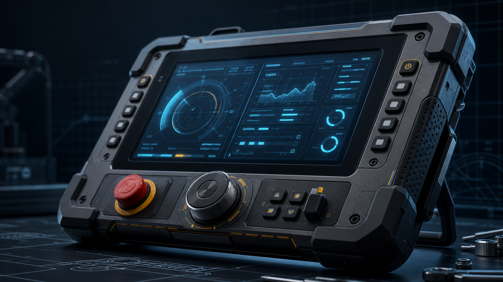
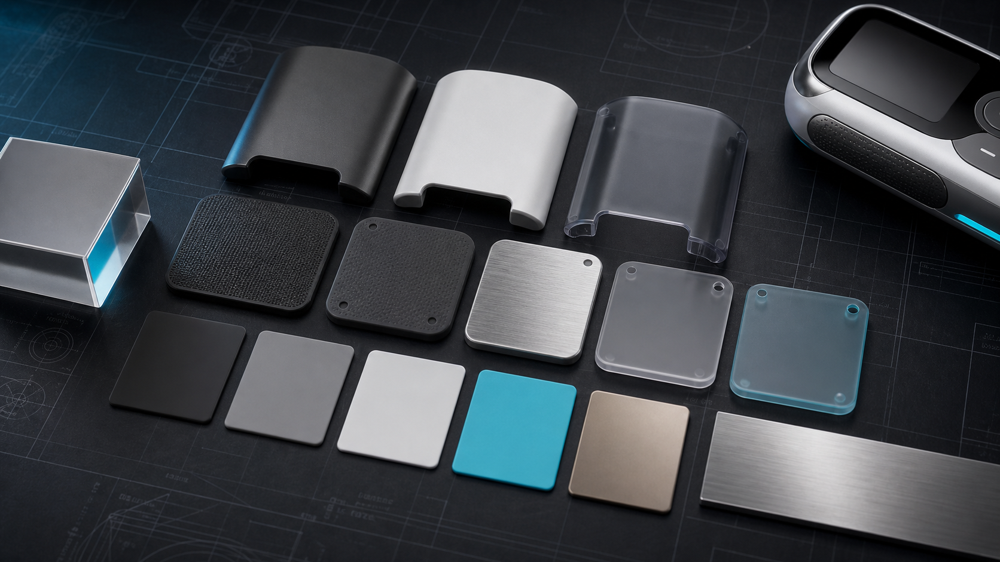

中南大学 · 工业设计 · 本科
多次获评校级优秀学生、学业奖学金，主修人机工程学、产品形态设计、设计心理学、产品交互设计、智能产品设计、CMF 设计、模型制作等课程。
Profile
中南大学建筑与艺术学院工业设计专业本科应届毕业生，求职方向覆盖工业设计师、产品设计师、交互设计师与智能产品设计专员。
具备用户需求调研、产品外观造型、人机交互优化、产品结构适配与落地设计能力，熟悉智能产品、家居设备、工程装备类产品的全流程设计。
Education
多次获评校级优秀学生、学业奖学金，主修人机工程学、产品形态设计、设计心理学、产品交互设计、智能产品设计、CMF 设计、模型制作等课程。
Capabilities
Rhino、Keyshot、PS、AI、Figma、Sketch、CAD；可独立完成产品建模、渲染、视觉排版与交互界面设计输出。
覆盖用户调研、需求分析、草图构思、建模渲染、模型落地与设计迭代，兼顾概念表达和工程可实现性。
熟悉色彩、材质、工艺设计及人机工程适配，擅长产品改良创新、用户体验优化和结构落地协作。
具备设计报告、调研报告、方案展示 PPT 撰写能力，可面向团队评审和项目交付组织清晰表达。
Selected Projects
聚焦家用急救场景，围绕普通用户操作门槛高、设备便携性差、人机适配度低等痛点，完成产品全流程创新设计。
以“非专业用户也能快速理解和操作”为核心，围绕握持尺度、按键层级、状态反馈和安全感建立产品语言。
完成调研洞察、用户旅程、草图方案、三维建模、CMF 推演、爆炸结构概念图与方案展示材料。
面向居家照明场景升级，针对传统灯具造型老旧、操作单一、适配现代家居风格差等问题进行改良创新。
从现代家居语境出发，弱化传统灯具的机械感，强化轻量化体量、柔和光效与低学习成本交互。
输出竞品趋势分析、交互逻辑推演、触控与感应双模式方案、材质光影效果图和展示排版。
围绕小型智能硬件的便携场景，开展外观比例、握持触感、充电收纳方式与材料组合的概念探索。
用克制的几何体量和材料对比强化便携产品的精致感，同时保证握持、充电和桌面摆放的使用连续性。
输出产品概念渲染、模块化底座、CMF 材料板、关键细节图和作品集展示图。
Portfolio Gallery

面向家庭急救场景的便携智能硬件概念，强调人机握持、清晰操作与可信赖的医疗消费级质感。

以触控与感应双模式为核心的现代家居灯具方案，平衡柔和光效、简约造型和智能体验。

面向工业装备场景的耐用控制终端概念，突出防护结构、物理旋钮、屏幕信息层级与工程可靠感。

以轻量化、模块化充电与精致材质对比为方向的便携数码产品概念，体现完整 CMF 推演能力。

以分层爆炸结构展示便携急救设备的外壳、握持模块、显示层、电池与传感单元，强化工程落地表达。

通过光弧、触控条与感应模块呈现灯具交互逻辑，让智能体验从功能说明转化为直观视觉语言。

聚焦屏幕信息层级、实体旋钮、防护边框与握持纹理，突出工程装备终端的可靠性与操作确定性。

围绕便携智能产品建立材料、色彩与表面处理板，展示从质感定义到产品落地的 CMF 推演能力。
Awards
全国大学生工业设计大赛 省级二等奖
湖南省大学生设计艺术作品大赛 市级一等奖
中南大学一等奖学金 2 次、二等奖学金 1 次
优秀学生干部、三好学生
校级创新创业设计大赛 金奖
Practice
参与智能家居、小型数码产品草图绘制、建模渲染、效果图优化、竞品调研与设计落地对接，累计输出 30+ 套设计效果图。
参与智能产品、装备产品创新设计项目，负责新生设计软件教学、模型制作指导、参赛申报与团队作品整理。
Contact
关注智能产品、家居设备与工业装备设计，致力于以优质设计解决用户真实需求，创造可落地的产品价值。